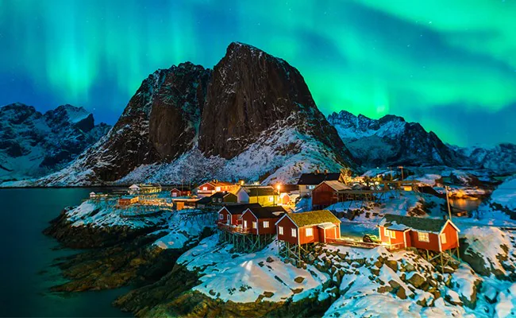

There is not much to write about on this topic, but I just thought it was interesting. Iceland doesn't have a single forest, it is just an interesting natural phenomenon that people have been trying to explain for decades, people mostly just believe that the ecosystem in Iceland simply can't support a forest.
